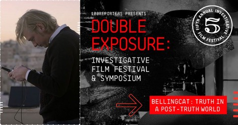

Disinformation & truth
Misinformation, deepfakes, verification and trust.
6 films · 15 sessions · 57 people
Often together with: Documentary craftWar, conflict & the militaryDemocracy & electionsLegal & safety for reportersPublic records & FOIATechnology & AI
Films
 My Underground MotherMarisa Fox2026 · 86 min
My Underground MotherMarisa Fox2026 · 86 min- A Thousand CutsRamona Diaz2020 · 98 min
 Short CutsIn Event of Moon Disaster2020 · 82 min
Short CutsIn Event of Moon Disaster2020 · 82 min- The Art of Political MurderPaul Taylor2020 · 80 min

Bellingcat: Truth in a Post-Truth WorldHans Pool2019 · 88 min End of TruthEric Matthies, Tricia Todd2017 · 58 min
End of TruthEric Matthies, Tricia Todd2017 · 58 min
Sessions
- 2026 · Fri Nov 6 · 12:15pmPanelFaked, Erased, Distorted: Does the Record Matter?Swapneel Mehta, Yvonne Ng, Sam Benstead, Mark Graham, Sig Libowitz
- 2025 · Thu Oct 30 · 1:00 PMPanel · DX²Fog of Falsehood: Disinformation, AI, and the Battle Over RealityGaia de Simoni, Eugene Jarecki, Ben Loeterman, Nick Quested, Kate Stonehill, Zach Toombs
- 2021 · Thu Oct 14 · 10:00amPanel · DX²Deep Fakery and SatireAdebayo Okeowo, Katerina Cizek, Henry Ajder, Stephanie Lepp
- 2021 · Wed Oct 13 · 2:45pmPanelFact Checking for FilmmakersHilke Schellmann, Darya Marchenkova
- 2021 · Wed Oct 13 · 1:00pmPanelThe Chilling Effect of Libel Defamation CostsLynn Oberlander, Lynn D. Carrillo, Kelli L. Sager, Dale Cohen, Jesse Einstein
- 2020 · Wed Oct 14 · 2:00pmPanel · DX²The Big SocialMarek Tuszynski, Brittany Kaiser, Larissa Rhodes, Jeff Orlowski
- 2019 · Sat Oct 12 · 11:45 AMWorkshopFact CheckingHilke Schellmann, Laila Al-Arian
- 2019 · Sat Oct 12 · 10:00 AMWorkshopOpen Source Investigations and VerificationHilke Schellmann, Christiaan Triebert
- 2019 · Fri Oct 11 · 1:15 PMPanel · DX²The New TransparencyKarim Amer, Jay Rosen, Claire Wardle, Harlo Holmes
- 2018 · Fri Oct 12 · 9:30 AMPanel · DX²Into the Deep FakeLee Foster, Sam Gregory, Edward Klaris, Robert Maguire, Maxim Pozdorovkin, Ed Klaris
- 2018 · Sat Oct 13 · 10:00 AMWorkshopWorkshop: Fact-Checking for Filmmakers, Presented by the Pulitzer Center on Crisis ReportingHilke Schellmann, Poh Si Teng
- 2017 · Sat Oct 21 · 1:30 PMWorkshopFact Checking Workshop, Presented by the Pulitzer Center on Crisis ReportingEleanor Bell Fox, Lindsay Crouse, Hilke Schellmann, Steve Sapienza
- 2017 · Thu Oct 19 · 9:30 AMConversationOpening Conversation - Calculated Chaos: The Real Take on Fake NewsCharles Lewis, Jane Mayer, Matt Thompson
- 2016 · Thu Oct 6 · 10:30 AMWorkshopFact Checking WorkshopPenny Lane
- 2016 · Thu Oct 6 · 10:30 AMPanel · DX²Truth: Ecstatic or Earthbound?Franklin Foer, Caitlin Dickerson, James Solomon, Elyse Steinberg
People most involved

 Eric MatthiesFilmmaker, moderator, panelist · 3 editions, 2017–2021
Eric MatthiesFilmmaker, moderator, panelist · 3 editions, 2017–2021- Tricia ToddFilmmaker · 2017
- Hans PoolFilmmaker · 2019
- Ramona DiazFilmmaker, panelist · 2 editions, 2019–2020
 Marisa FoxPanelist, filmmaker · 2026
Marisa FoxPanelist, filmmaker · 2026- In Event of Moon DisasterFilmmaker · 2020
- Paul TaylorFilmmaker · 2020
 James SolomonPanelist · 2016
James SolomonPanelist · 2016 Elyse SteinbergPanelist · 2016
Elyse SteinbergPanelist · 2016- Penny LaneFilmmaker, workshop leader · 2 editions, 2016–2018
- Eleanor Bell FoxWorkshop leader · 2017
 Steve SapienzaPanelist · 4 editions, 2017–2025
Steve SapienzaPanelist · 4 editions, 2017–2025- Robert MaguirePanelist · 2018
- Maxim PozdorovkinFilmmaker, panelist · 2018
 Poh Si TengPanelist, workshop leader · 2 editions, 2018–2021
Poh Si TengPanelist, workshop leader · 2 editions, 2018–2021- Karim AmerPanelist · 2019
- Harlo HolmesWorkshop leader, panelist, moderator · 5 editions, 2015–2026Freedom of the Press Foundation

 Gaia de SimoniPanelist, filmmaker · 2 editions, 2024–2025
Gaia de SimoniPanelist, filmmaker · 2 editions, 2024–2025 Eugene JareckiPanelist, filmmaker · 2025
Eugene JareckiPanelist, filmmaker · 2025 Ben LoetermanPanelist, filmmaker · 2 editions, 2024–2025
Ben LoetermanPanelist, filmmaker · 2 editions, 2024–2025